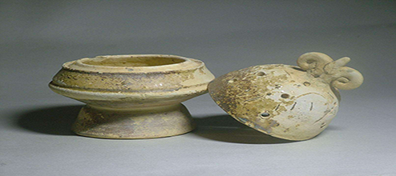
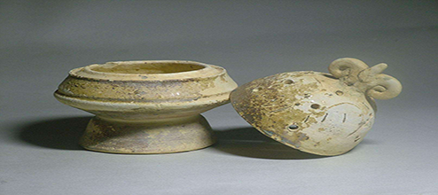
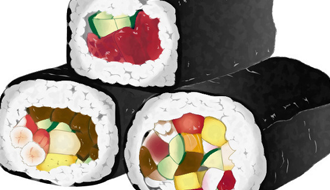
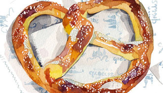

文物档案
 

文物是人类在社会活动中遗留下来的具有历史、艺术、科学价值的遗物和遗迹。它是人类宝贵的历史文化遗产。
文物是指具体的物质遗存，它的基本特征是：第一，必须是由人类创造的，或者是与人类活动有关的；第二，必须是已经成为历史的过去，不可能再重新创造的。目前，各个国家对文物的称谓并不一致，其所指涵义和范围也不尽相同，因而迄今尚未形成一个对文物共同确认的统一定义。
文物藏品

寿司东汉末年，战乱四起，百姓流离失所，为了逃荒，方便携带发明了寿司.
cupcake和精致仿佛的法式甜点相比，Cupcake充满着美国式的气氛，简单，自由，充满快乐。

面包面包，也写作麺包，是一种用五谷（一般是麦类）磨粉制作并加热而制成的食品。
美食指南

马卡龙

意大利面